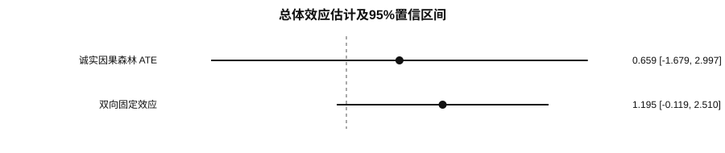
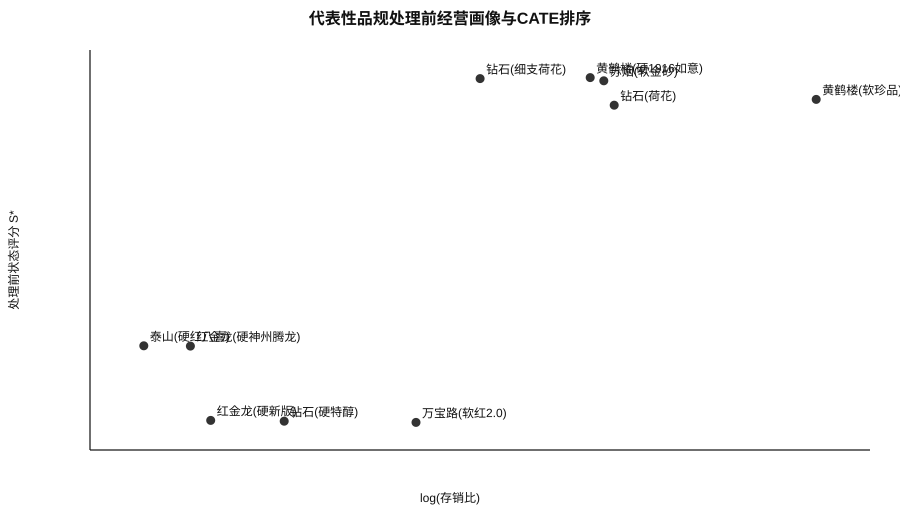
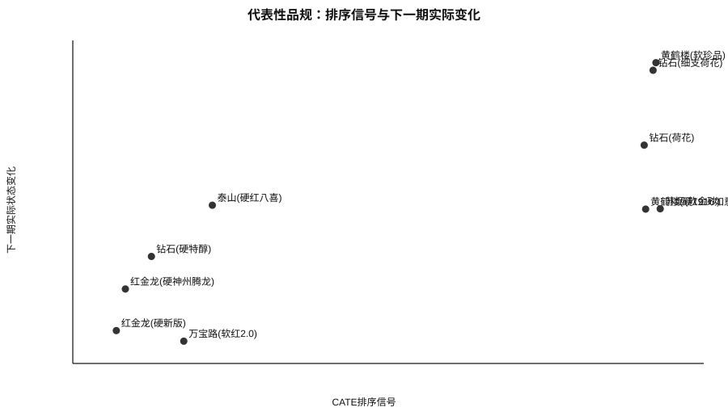

基于诚实因果森林的卷烟品规供给收缩差异化复核研究
摘 要：卷烟品规月度投放中，供给收缩对象常需同时权衡库存压力、价格状态和终端供给风险，采用统一规则容易忽略品规间经营状态差异。基于某市2025年1月至2026年6月203个品规的2886条品规×月份观测，本文以t−1期经营画像构建处理定义独立的市场状态评分，以订单满足率相对同月分位水平及环比变化识别代理供给收缩事件，采用按品规分组交叉拟合的诚实因果森林估计品规级异质性排序信号，并结合共同支持、倾向得分平衡、负对照及处理定义敏感性进行证据约束。结果表明：总体平均效应估计为0.659，95%置信区间为−1.679～2.997，不支持对全部品规统一收缩；高、低排序组CATE均值分别为1.832和−0.321，代表性高排序品规更多表现为处理前状态水平较高且库存承压，低排序品规则更多处于处理前状态偏低区间；处理前负对照为3.278（P<0.001），且约14.8%的处理样本共同支持不足，说明现有观测数据仍存在明显选择偏差。描述性回溯中，高排序组与其余样本的下一期连续状态变化均值差为4.544，但两组改善率均为59.3%。因此，模型输出更适合作为月度品规人工复核的排序线索，而不宜直接解释为自动减量指令。
关键词：卷烟品规；供给收缩；诚实因果森林；异质性排序；货源投放；人工复核
Abstract: Uniform supply-contraction rules may overlook substantial differences in inventory pressure, price status and terminal supply risk across cigarette specifications. Using 2,886 specification-month observations for 203 specifications from January 2025 to June 2026, this study constructed a treatment-definition-independent market-state score from pre-treatment operating profiles and identified proxy contraction events from order-fulfillment conditions. An honest causal forest with specification-block cross-fitting was used to generate heterogeneous ranking signals. Evidence was constrained by overlap diagnostics, propensity-score balance, a pre-treatment negative control and sensitivity tests of the treatment definition. The estimated average treatment effect was 0.659 (95% CI: −1.679 to 2.997), providing insufficient evidence for uniform contraction. Mean CATEs in the high- and low-ranking groups were 1.832 and −0.321, respectively. However, the pre-treatment negative-control estimate was 3.278 (P<0.001), and approximately 14.8% of treated observations had insufficient common support. A descriptive backtest showed a 4.544-point difference in continuous next-period state change, while the improvement rate was 59.3% in both the high-ranking and comparison groups. The model should therefore be used to prioritize manual review rather than to generate automatic contraction volumes.
Keywords: cigarette specification; supply contraction; honest causal forest; heterogeneous ranking; cigarette allocation; manual review
0 引言
卷烟商业企业的月度货源投放并非单纯的数量分配。部分品规在库存积压、价格承压或动销放缓时需要控制供给节奏，但另一些品规本已供给偏紧，继续收缩可能进一步降低终端满足水平并诱发需求向替代品规转移。因此，同一“收缩”动作在不同品规上的经营含义并不一致。实际管理中更需要解决的问题，是在月度会商前从大量品规中识别出需要优先复核的对象，而不是预设所有品规存在相同的平均改善效果。
已有研究主要从市场状态评价、零售终端画像和品规精准投放等方向展开。市场状态评价能够回答“当前市场处于什么状态”，客户与品规画像能够回答“对象具有何种特征”，投放优化则进一步讨论总量和结构约束下的资源配置。然而，当管理动作已经具体到供给收缩时，仅使用平均状态或固定阈值仍难回答“哪些品规更值得优先复核”。异质性处理效应方法可以提供品规级差异排序，但观测数据中的收缩行为通常伴随业务人员事前判断，若直接把模型输出解释为因果决策，容易受到处理选择偏差、共同支持不足和时间顺序污染影响。
基于此，本文将研究目标收敛为“品规级复核排序”。主要做法包括：一是将处理前经营画像固定在t−1期，并从结果评分中排除用于定义处理的供给字段，降低处理—结果循环构造；二是按品规分组进行交叉拟合，避免同一品规跨月进入训练折和验证折造成信息泄漏；三是把共同支持、负对照、倾向得分平衡和处理定义敏感性作为主证据链的一部分，对模型排序的解释范围进行约束；四是以可追溯代表性品规和下一期实际状态变化检验排序与经营情境的一致性。本文不直接估计具体减量幅度，最终调控动作仍需结合真实业务日志和人工会商。
1 材料与方法
1.1 数据来源与样本构建
研究数据为某市2025年1月至2026年6月品规层级月度经营管理数据，2026年7月数据仅用于构造2026年6月样本的下一期结果。分析单元为“品规×月份”。数据包括销售与库存、订货与满足、价格与毛利、渠道承接及经营趋势等信息。经缺失值处理、时间对齐以及t−1期特征和t+1期结果构造后，共得到203个品规、2886条有效观测，其中代理供给收缩事件258条，对照观测2628条，处理占比8.9%。
| 数据模块 | 主要字段 | 时点 | 用途 |
|---|---|---|---|
| 价格与盈利 | 顺价指数、毛利率等 | t−1 | 处理前经营画像、状态评分 |
| 库存与动销 | 存销比、库存消化、动销指标 | t−1 | 处理前经营画像、状态评分 |
| 订货与满足 | 订单满足率及环比变化 | t | 识别代理收缩事件 |
| 下一期经营结果 | 处理定义独立状态评分变化 | t+1 | 结果变量 |
Tab. 1 Main data modules and temporal definitions
1.2 状态评分与代理供给收缩事件
为避免把处理定义中的供给信息再次写入结果变量，状态评分仅由价格、盈利、库存消化和动销相关指标构成。各指标按经营方向统一后标准化，再加权形成综合状态评分：
式中，zkit为第k个状态指标的标准化值，wk为对应权重。处理前画像使用t−1期值，下一期状态变化定义为Yi,t+1=S*i,t+1−S*it。
现有数据未包含正式调控审批日志，因此本文将“订单满足率处于同月较低分位且环比继续下降”定义为代理供给收缩事件。主口径为同月P35且环比下降超过2个百分点。该变量用于识别探索性排序场景，不等同于企业正式减量指令。
1.3 诚实因果森林与品规分组交叉拟合
设Tit为代理收缩事件，Xi,t−1为处理前经营画像，Yi,t+1为下一期状态变化。条件平均处理效应写为：
模型采用诚实因果森林进行异质性估计。交叉拟合按品规分组实施，同一品规的全部月份观测只进入训练折或验证折之一，以降低同一品规跨月信息泄漏。由于品规之间可能存在替代关系，且代理收缩事件并非随机发生，τ(x)在本文中主要用于构造异质性排序信号，不直接作为无偏因果效应解释。
1.4 证据约束与稳健性检验
本文从4个方面约束排序解释：①共同支持诊断，识别处理组和对照组倾向得分重叠不足的观测；②倾向得分匹配后的协变量平衡，使用平均绝对标准化差异（|SMD|）衡量；③处理前负对照，用处理发生前的状态变化检验既有趋势与处理选择的关联；④处理定义敏感性，在P25～P45及不同环比下降门槛下重新估计双向固定效应。所有固定效应标准误按品规聚类。
Fig. 1 Research design and evidence chain
2 结果与分析
2.1 总体效应不支持统一供给收缩
诚实因果森林估计的平均处理效应为0.659，95%置信区间为−1.679～2.997，区间跨0。双向固定效应估计为1.195（P=0.075），同样未达到常用0.05显著性水平。两种方法方向均为正，但均不足以支持“对全部品规统一收缩能够稳定改善下一期状态”的结论。因此，后续分析不再围绕平均效应扩展，而转向品规级排序与证据边界。

Fig. 2 Overall effect estimates and 95% confidence intervals
2.2 异质性排序与处理前经营画像
高、低排序组的CATE均值分别为1.832和−0.321，表明模型输出存在明显的品规级排序差异。代表性案例显示，高排序品规处理前状态评分多集中于约58.5～62.3，同时部分品规存销比较高；低排序代表品规处理前状态评分约14.7～25.3。该结果说明排序更接近“状态水平—库存压力—价格状态”的组合，而非由单一销量或价位段决定。需要强调的是，这一画像比较用于解释排序所对应的经营情境，不能由此推导某个单变量的因果方向。

Fig. 3 Pre-treatment operating profiles and CATE ranking of representative specifications
2.3 识别风险与稳健性证据
倾向得分匹配后，平均|SMD|由0.178降至0.057，说明观测协变量的平衡有所改善；但处理前负对照估计为3.278（P<0.001），提示代理收缩事件与既有状态轨迹显著相关，存在反向选择或未观测混杂。另有约14.8%的处理样本共同支持不足，说明部分高低排序可能涉及样本外外推。综合这些证据，模型结果应定位为“有信息量的复核排序”，而不是“已经识别的自动因果规则”。
| 检验 | 结果 | 统计口径 | 可支持的结论 |
|---|---|---|---|
| 诚实因果森林ATE | 0.659 | 95% CI -1.679～2.997 | 总体平均效应跨0，不支持统一收缩 |
| 双向固定效应 | 1.195 | P=0.075 | 方向为正但统计证据不足 |
| 处理前负对照 | 3.278 | P<0.001 | 存在明显选择偏差/反向选择风险 |
| PSM平衡诊断 | 0.178→0.057 | 平均|SMD| | 观测协变量平衡改善，但不能消除未测混杂 |
| 共同支持不足 | 14.8% | 处理样本 | 需排除/单列低重叠样本 |
| 高/低排序CATE | 1.832 / -0.321 | 组均值 | 存在明显排序分化 |
| 描述性回溯差 | 4.544 | 连续状态变化差 | 支持排序信息，但非因果效应 |
| 改善率 | 59.3% / 59.3% | 高排序/其余 | 不能宣称命中率提高 |
Tab. 2 Core evidence chain and interpretation boundaries
Fig. 4 Identification-risk and robustness diagnostics
2.4 处理定义敏感性
改变订单满足率分位门槛和环比下降阈值后，双向固定效应估计方向均为正，但显著性随处理定义变化。P25和P30口径下P值低于0.05，而主定义P35口径及P40、P45口径下均未达到0.05。这种变化说明结论对事件定义存在敏感性，也进一步支持将研究定位为探索性复核，而不应选择最显著的阈值形成自动业务规则。
| 处理定义 | 处理样本量 | 双向固定效应 | 95% CI | P值 |
|---|---|---|---|---|
| 月内P25且下降>2 | 201 | 1.685 | 0.145～3.224 | 0.032 |
| 月内P30且下降>2 | 225 | 1.550 | 0.156～2.944 | 0.029 |
| 主定义：月内P35且下降>2 | 258 | 1.195 | -0.119～2.510 | 0.075 |
| 月内P40且下降>3 | 251 | 1.143 | -0.214～2.500 | 0.099 |
| 月内P45且下降>3 | 256 | 1.170 | -0.169～2.509 | 0.087 |
Tab. 3 Sensitivity to proxy contraction-event definitions
2.5 排序回溯与实际品规案例
描述性回溯中，高排序组与其余观测的下一期连续状态变化均值差为4.544，但两组“是否改善”的比例均为59.3%。前者说明排序对连续变化幅度具有一定信息，后者则表明其并未在简单二分类命中率上形成优势。因此，模型价值更适合表述为“缩小需要人工复核的品规范围”，而不是“提高收缩成功率”。

Fig. 5 CATE ranking and observed next-period state changes of representative specifications
| 月份 | 品规 | 类别 | CATE | S* | 顺价指数 | 存销比 | 下一期变化 | 复核建议 |
|---|---|---|---|---|---|---|---|---|
| 202505 | 苏烟(软金砂) | 一类烟 | 4.07 | 61.90 | 1.179 | 2471.9 | 0.18 | 保留排序但不据单期变化扩大收缩，进入观察复核 |
| 202503 | 黄鹤楼(软珍品) | 一类烟 | 4.01 | 59.33 | 1.226 | 16696.1 | 30.25 | 保留为优先复核案例，继续观察连续2期状态与价盘 |
| 202504 | 钻石(细支荷花) | 一类烟 | 3.98 | 62.20 | 1.165 | 812.0 | 28.68 | 保留为优先复核案例，继续观察连续2期状态与价盘 |
| 202510 | 黄鹤楼(硬1916如意) | 一类烟 | 3.89 | 62.34 | 1.179 | 2188.0 | 0.12 | 保留排序但不据单期变化扩大收缩，进入观察复核 |
| 202506 | 钻石(荷花) | 一类烟 | 3.87 | 58.52 | 1.161 | 2715.7 | 13.27 | 保留为优先复核案例，继续观察连续2期状态与价盘 |
| 202602 | 红金龙(硬新版) | 四类烟 | -2.51 | 14.99 | 1.124 | 71.1 | -24.88 | 暂缓进一步收缩，优先检查缺货、满足率和替代转移 |
| 202602 | 红金龙(硬神州腾龙) | 三类烟 | -2.40 | 25.25 | 1.136 | 59.1 | -16.33 | 暂缓进一步收缩，优先检查缺货、满足率和替代转移 |
| 202511 | 钻石(硬特醇) | 四类烟 | -2.08 | 14.88 | 1.124 | 138.8 | -9.62 | 暂缓进一步收缩，优先检查缺货、满足率和替代转移 |
| 202606 | 万宝路(软红2.0) | 二类烟 | -1.69 | 14.71 | 1.118 | 456.1 | -27.06 | 暂缓进一步收缩，优先检查缺货、满足率和替代转移 |
| 202512 | 泰山(硬红八喜) | 三类烟 | -1.35 | 25.29 | 1.136 | 38.5 | 0.92 | 暂缓自动动作，维持人工观察 |
Tab. 4 Traceable representative specification observations
注：月份为按本文规则识别的代理收缩事件月份，并非正式审批日志；下一期变化为观测事实，不解释为无偏因果效应。内部研究版保留品规名称，正式投稿前应根据保密要求匿名化。
3 讨论
3.1 差异化复核的经营含义
结果表明，供给收缩的管理难点并不是寻找一个对所有品规都成立的统一阈值，而是在月度会商前识别经营状态不同的对象。高排序案例更多表现为处理前状态水平较高但库存承压，此时需要重点核查库存消化和价格状态；低排序案例则更多处于处理前状态偏低区间，继续收紧供给可能放大终端缺货风险。模型将上述信息压缩为排序信号，其业务价值在于把有限的人工复核资源优先配置到更需要讨论的品规。
3.2 为什么不能把CATE直接写成减量决策
本研究的代理收缩事件来自经营结果字段而非随机试验或正式审批日志，且处理前负对照显著，说明业务人员既有判断与市场趋势已经影响处理发生。与此同时，共同支持不足和品规替代关系也限制了条件无混淆性与稳定单元处理值假设。因此，即使诚实因果森林能够输出局部差异，也不能把品规级点估计直接转换为“应减少多少供给”。更稳妥的应用方式是将模型作为会商前的预筛选工具，并把异常排序、低共同支持和反例品规标记为需重点解释对象。
3.3 局限与后续验证
本文仍有4项关键局限：一是缺少正式调控日志，代理事件不能完全等价于真实收缩动作；二是尚缺严格滚动时间外排序验证，按品规分组交叉拟合主要解决信息泄漏而非未来期泛化；三是品规之间存在替代关系，单品规处理可能影响其他品规；四是当前回溯只显示连续状态变化差，而简单改善率并未提高。后续应在获得真实调控记录后开展前瞻性或准实验验证，并补充Top-k排序增益、随机种子稳定性、共同支持域内重估以及替代关系暴露变量。
投稿前必须补做的4项实验：滚动时间外验证；Top-k lift/Qini或AUUC；不同随机种子排名稳定性；共同支持域内主结果重估。上述数值必须由原始面板重新计算，本文不虚构。
4 结论
（1）诚实因果森林ATE为0.659（95% CI：−1.679～2.997），双向固定效应P=0.075，现有样本不足以支持对全部品规实施统一供给收缩。
（2）品规级排序存在明显差异，高排序案例更多表现为处理前状态水平较高并伴随库存压力，低排序案例更多处于状态偏低区间。描述性回溯显示连续状态变化存在4.544的组间差，但改善率均为59.3%，因此排序应被理解为复核线索而非成功率预测。
（3）处理前负对照显著且约14.8%的处理样本共同支持不足，说明现阶段仍存在较强识别边界。将异质性排序、共同支持诊断和人工会商结合，可用于缩小月度品规复核范围；具体调控动作和减量幅度仍需真实业务日志与前瞻试验验证。
参考文献
[1] 黄敏, 梁艳, 向云海, 等. 基于智能集成与阈值训练的卷烟市场状态评价体系研究——以南充市为例[J]. 中国烟草学报, 2025, 31(5): 155-166.
[2] 姜思明, 刘荣, 谭升达, 等. 基于零售终端数据治理的卷烟市场状态监测研究[J/OL]. 烟草科技, 2026-04-22. DOI:10.16135/j.issn1002-0861.2025.0510.
[3] 谭琛, 周欣然, 栾晓宇, 等. 基于高维精准画像与深度学习的卷烟零售户动态分档研究[J]. 中国烟草学报, 2024, 30(3): 1-9.
[4] 刘佳. 基于品规生命周期的卷烟品牌精准营销探索与研究[J]. 中国烟草学报, 2021, 27(6): 108-111.
[5] 金文蔚, 虞华东, 沈振凯, 等. 数据驱动的卷烟品规精准投放策略研究[J]. 中国烟草学报, 2025, 31(6): 152-160.
[6] 梁雪霞, 陈志, 邓超, 等. 基于大数据标签的卷烟新品选点投放模型研究与应用[J]. 中国烟草学报, 2025, 31(3): 142-147.
[7] Cui J, Chen H, Liu D. Research on the construction and application of an MLP-dominated cigarette sales forecasting model[J]. Acta Tabacaria Sinica, 2026, 32(3): 133-140.
[8] Wager S, Athey S. Estimation and inference of heterogeneous treatment effects using random forests[J]. Journal of the American Statistical Association, 2018, 113(523): 1228-1242.
[9] Athey S, Tibshirani J, Wager S. Generalized random forests[J]. The Annals of Statistics, 2019, 47(2): 1148-1178.
投稿前仍需逐条核对正文引文号、DOI、英文题名及期刊格式，并完成单位保密审查。